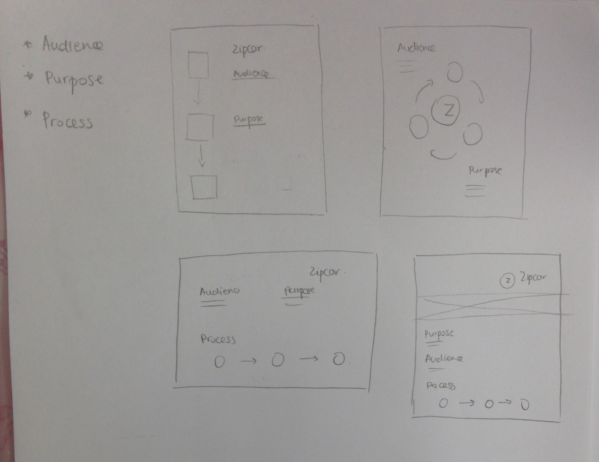
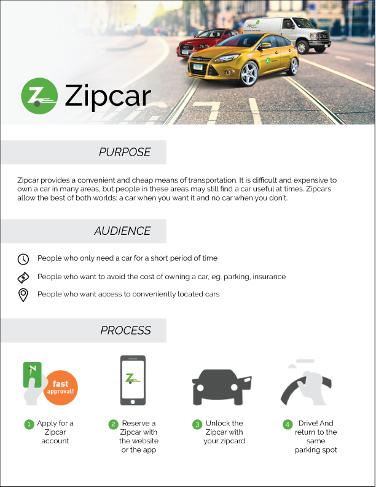
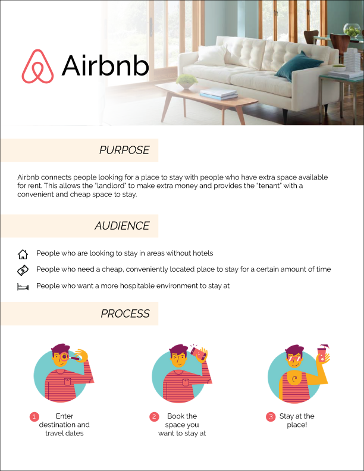
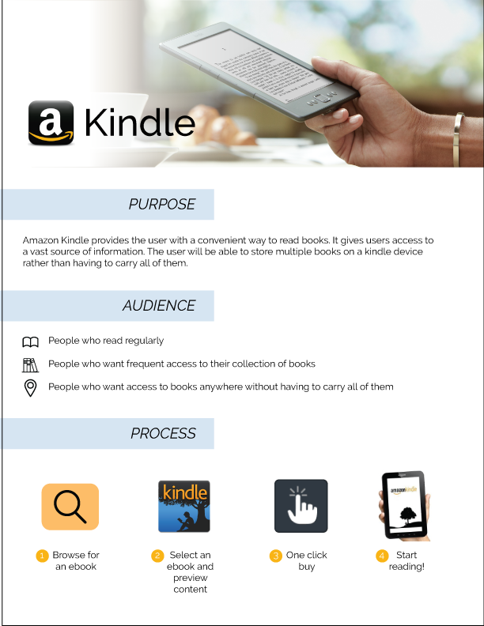

Project Description
In Service Design, our first project was to gather and present examples of three product service systems. During my research, I found Zipcar, Airbnb, and Amazon Kindle as having interesting and unique systems so I decided to research those three
Sketches

Zipcar
Purpose
Zipcar provides a convenient and cheap means of transportation. It is difficult and expensive to own a car in many areas, but people in these areas may still find a car useful at times. Zipcars allow the best of both worlds: a car when you want it and no car when you don’t.
Audience
Zipcars are useful for people living in cities where parking can be both inconvenient and expensive. By having access to Zipcars, these individuals do not need to worry about finding parking over night or during times when they are not using their car. People who only need a car for a short period of time will find that Zipcar is a very useful service: they simply need to swipe a card at one of many conveniently placed Zipcar spots and they will have a car for however long they wish.

Airbnb
Purpose
Airbnb connects people looking for a place to stay with people who have extra space available for rent. This allows the “landlord” to make extra money and provides the “tenant” with a convenient and cheap space to stay.
Audience
Airbnb directs its services to two major parties. One such party is people who are looking to rent out a space, such as someone with an empty room that isn’t currently being used, or someone who is going on vacation for the summer and has an apartment they won’t be using. These people can rent out their place and make money off of this space. The other party being targeted by Airbnb is people who need a place to stay, such as someone who is travelling and in town for a weekend, or someone who is studying abroad for a semester. These people can find cheap rooms to stay in and will have more location choices than if they had used other services, such as a hotel.

Kindle
Purpose
Amazon kindle e-books provides users with access to a vast source of books. Any of the millions of books that Amazon has on file are accessible to anyone who uses this service.
Audience
This service is useful to anyone who needs books. This can range from a college student who needs textbooks, to a researcher who needs to resource. It is also useful to the everyday, casual reader. People who do not have a convenient means to access a library can use Amazon kindle e-books to get information from where ever they are.

Year
2015
Class
Service Design